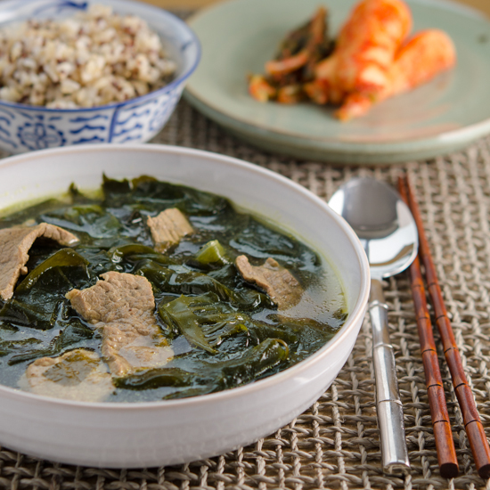
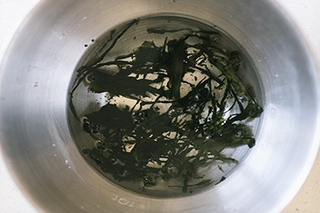
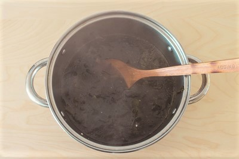
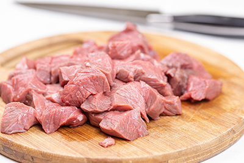
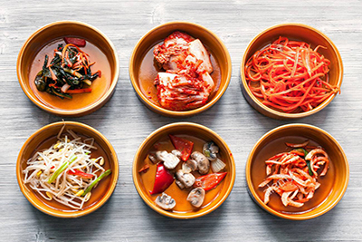

HOME > RECIPES > SOUPS AND STEWS SEPTEMBER 16, 2020
KOREAN SEAWEED SOUP WITH BEEF
(SOEOGOGI MIYEOKGUK) 쇠고기 미역국


Jump to Recipe Print Recipe
A light, nutritious seaweed soup that is a staple in Korean homes!
This dish is especially enjoyed on birthdays!

Introduction
Miyeok-guk is primarily made using edible seaweed paired with any choice of protein usually beef, seafood, or canned tuna. In this recipe the soup is made with beef.
This nutritious soup helps with metabolism, blood purification, detoxification, has anti-inflammatory properties, and many more benefits.
Due to its array of health benefits, this soup is often served to postpartum women to help with recovery and breast-milk production.
As an on-going tradition since the Goryeo Dynasty 10th century, Koreans eat Miyeok-guk on birthdays to commemerate birth and motherhood.
Although Miyeok-guk has a history of being consumed during highlights, it can also be enjoyed as a regular hearty meal!
| Prep Time | Cook Time | Total Time | Yield |
|---|---|---|---|
| 10Mins | 60Mins | 70Mins | 4-6 Servings |
Course: Soup
Cuisine: Korean
Storage Life: Can be refridgerated for atleast 5 days; reheat before serving
Ingredients List
Directions
Step 1
In a big bowl soak the dried miyeok for atleast 30 minutes allowing it to expand. Drain the water and cut into 5 inch lengths.


Step 2
Add 16 cups of water into a large pot and add the soaked miyeok (about 4 cups worth). Boil over high heat for 20 minutes. Add more water if soup becomes too thick.

Step 3
Add diced beef and minched garlic to the pot and boil over medium to medium high heat for 20 minutes.

Step 4
Add fish sauce, toasted sesame oil, and salt to the pot of miyeok-guk as final touches. Feel free to gradually add salt if needed; you can always add water to dilute the flavour.
Step 5
Serve warm with a bowl of steamed rice, kimchi, and other banchan (side dishes) of your choosing. Enjoy!

Nutritional Facts
Serving Size: 1 Serving
Calories 87.5 | Total Fat 4.3g | Cholesterol 10.4mg | Sodium 635.7mg | Potassium 183.3mg | Total Carbohydrate 5.6mg | Protein 6.3g | Vitamin A 0.4% | Vitamin B-12 1.2% | Vitamin B-6 9.5% | Vitamin C 2.1% | Vitamin D 0.0% | Vitamin E 0.8% | Calcium 2.2% | Copper 5.3% | Folate 4.3% | Iron 2.8% | Magnesium 6.1% | Manganese 5.5% | Niacin 17.1% | Pantothenic Acid 1.5% | Phosphorus 6.3% | Riboflavin 7.5% | Selenium 8.0% | Thiamin 3.8% | Zinc 2.1%
How Was It?
Did you make this recipe?
Tag @KimchiBreath on Instagram and hashtag #MyMiyeokguk for a chance to win a free meal at Julieana Moon's Michelan Star restaurant! I love to hear how your recipes turn out!